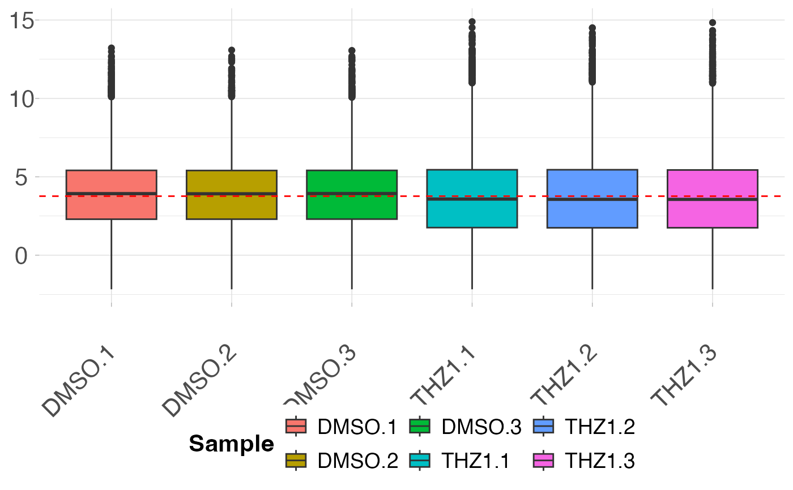
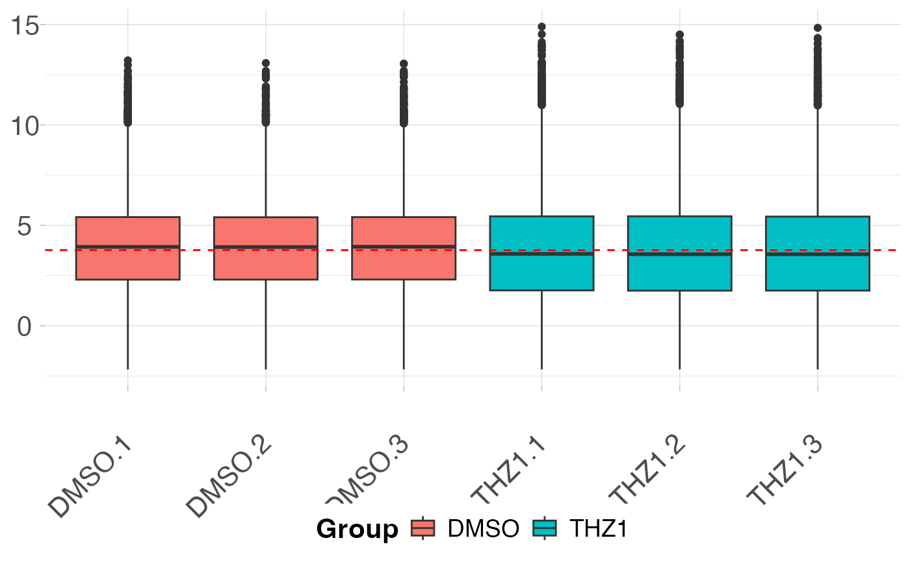
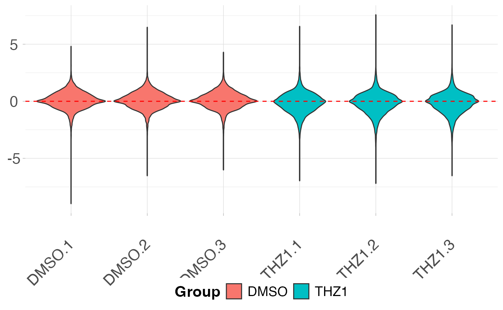

Create a boxplot (or violin plot) of expression distributions for the given expression matrix. Optionally plot the relative log expression of the matrix.
Usage
plot_boxplot(x, ...)
# Default S3 method
plot_boxplot(x)
# S3 method for class 'matrix'
plot_boxplot(
x,
metadata = NULL,
fillBy = NULL,
rle = FALSE,
violin = FALSE,
...
)
# S3 method for class 'data.frame'
plot_boxplot(
x,
metadata = NULL,
fillBy = NULL,
rle = FALSE,
violin = FALSE,
...
)
# S3 method for class 'SummarizedExperiment'
plot_boxplot(
x,
assay = "counts",
fillBy = NULL,
rle = FALSE,
violin = FALSE,
...
)Arguments
- x
matrix of expression values or
SummarizedExperimentobject- ...
Additional parameters passed to
ggplot2::geom_boxplot()orggplot2::geom_violin()- metadata
data.frame containing metadata per sample. rownames of metadata must match the colnames of the input matrix. Default NULL, each sample in x will be plotted individually.
- fillBy
metadata column used to fill boxplots. Default NULL, each sample will be a distinct color.
- rle
Plot the relative log expression value. This option assumes that the input matrix has already been logged. Be sure to take the log of the input matrix prior to setting this option.
- violin
Plot the data as a violin plot instead of a boxplot. Default FALSE.
- assay
If a SummarizedExperiment is supplied what assay is used. Default "counts"
Examples
# Create metadata for plotting
metadata <- data.frame(row.names = colnames(GSE161650_lc))
metadata$Group <- rep(c("DMSO", "THZ1"), each = 3)
# Plot the boxplot by sample
plot_boxplot(GSE161650_lc)

# Plot the boxplot by coloring each Group
plot_boxplot(GSE161650_lc, metadata, fillBy = "Group")

# Create a violin plot after RLE transformation
plot_boxplot(GSE161650_lc, metadata, fillBy = "Group", rle = TRUE, violin = TRUE)
